<div class="single-project-section section">
    <div class="container">
        <div class="row single-project-row">
            <div class="col-lg-9 col-md-8 content">
                <div class="project-single-first-box">
                    <div class="project-single-title">
                        <h1>Redesign of GeekWire iOS app</h1>
                    </div>
                    <div class="project-single-desc">
                        <p>This was done as a student project while at General Assembly.</p>
                        <p>A redesign of GeekWire's current mobile app, focusing on design trends that improve usability issues 
                           and great user experience for GeekWire's users. </p>
                    </div>
                </div>

                <div class="margin-box margin-p">
                    <h2>Overview</h2>
                    <div class="opacity-box"></div>
                    <h3>About</h3>
                        <p>GeekWire is a fast-growing, national technology news site founded in 2011 with 
                            strong roots in the Seattle region and a large audience of loyal, tech-savvy 
                            readers around the globe, who follow the site for breaking news, expert analysis 
                            and unique insights into the tech industry. Though they see a high usage rate on 
                            mobile they tend to focus on the native web experience versus the app. Geekwire 
                            mobile app puts their collective effort in the palm of your hand giving you access 
                            to all the latest news stories right on your iPhone. Right now, the 
                            company would like to understand  the current usability problems and obtain 
                            recommendation for improvement.</p>
                            
                        <p>For this concept piece, I worked on a team of three and served as the User Researcher and Usability 
                            Evaluator.
                        </p>
                    <h3>Duration</h3>
                        <p>This project was completed over a 2-week design sprint.</p>
                    <h3>Process</h3>
                        <ol><li>Research including:
                            <ul>        
                                <li>Competitive &amp; Comparative Analysis</li>
                                <li>Contextual Inquiry/Stakeholder Interviews</li>
                                <li>User Interviews (in person, 1:1)</li>
                                <li>Online Screener Surveys</li>
                                <li>Findings Report, Affinity Diagramming</li>
                                <li>Proto Persona &amp; Task Scenario Development</li>
                                <li>Usability testing</li>
                            </ul></li>
                            <li>Sketching &amp; Wireframes</li>
                            <li>Mock up &amp; Prototype</li>
                        </ol>
                    <h3>Final Design</h3>
                       <div class="img-box">
                            <figure>
                            
                            <figcaption>Figure 1. GeekWire app before and after redesign.</figcaption>    
                            </figure>
                       </div>            
                </div>

                <div class="margin-box margin-p">
                    <h2>Discovery</h2>
                    <div class="opacity-box"></div>
                    <h3>Client Interview</h3>
                        <p>The first three days were spent gathering initial data to better understand the current app and user needs. 
                           As a team, we formulated 10 generic questions to be used for interviews among users of technology news 
                           mobile app. Being the team researcher, I went out and conducted three in-person interviews.</p>
                        <p>I also got in touch with one of the founders of GeekWire through email exchanges. I asked him about the history
                          of the company, the branding, logo, and his stand on the  current state of the native web and mobile experience.</p>
                        <p>On the other hand, I inquired participants about their experience in using other mobile app for tech news and 
                           Geekwire mobile app as well. During the in-person interviews, I also questioned participants about their observations, 
                           pain points and wishes for GeekWire mobile app. I took extensive notes throughout the in-person interviews. Together 
                           as a group, we synthesized the responses through card sorting. Based on the analysis, we identified 4 primary insights  
                           within the current app:</p>
                        <div>
                            <ul>
                                <li>Geekwire mobile  app does not have easy search capability. </li> 
                                <li>It does have share feature.</li>
                                <li>Bookmarking is non-existent.</li>
                                <li>Commenting within the app is unavailable.</li>
                            </ul>
                            <div class="img-box">
                                <div style="display: flex">
                                    <figure>
                                        
                                        <figcaption>Team card sorting</figcaption>
                                    </figure>
                                    <figure>
                                        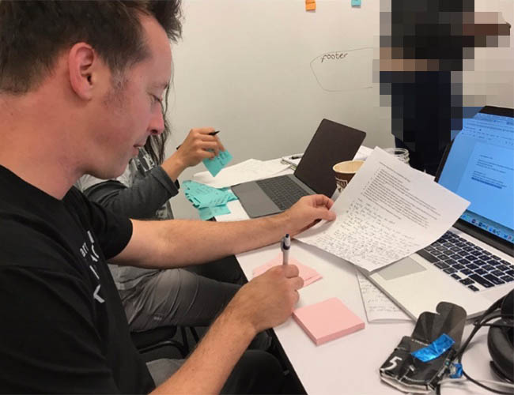
                                        <figcaption>Synthesizing</figcaption>
                                    </figure>
                                </div>
                            </div>
                        </div>
                        <p>I also spearheaded the sending of Screener Surveys using Survey Monkey. In the survey were 10 questions related to 
                            demographic, experience habit, behavior and participation questions. We had a total of 30 respondents, 14 males, 
                            16 females from Asia, Australia, and North America, ages varying from 20’s to 70’s.
                            </p>  
                            <div>
                                <style>
                                    .imgset1 figure {
                                        padding: 10px 0;

                                    }
                                    .imgset1 figure:first-child {
                                        padding-right: 10px;
                                    }
                                    @media (max-width: 525px) {
                                        .imgset1 {
                                            flex-direction: column;
                                        }
                                        .imgset1 figure:first-child {
                                        padding-right: 0;
                                    }
                                    }
                                </style>
                                <div class="imgset1" style="display:flex">
                                    <figure>
                                        
                                    </figure>
                                    <figure>
                                        
                                    </figure>
                                </div>
                                <div class="imgset1" style="display:flex">
                                    <figure>
                                        
                                    </figure>
                                    <figure>
                                        
                                    </figure>
                                </div>
                                <div class="imgset1" style="display:flex">
                                    <figure>
                                        
                                    </figure>
                                    <figure>
                                        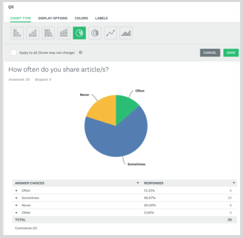
                                    </figure>
                                </div>
                                <div class="imgset1" style="display:flex">
                                    <figure>
                                        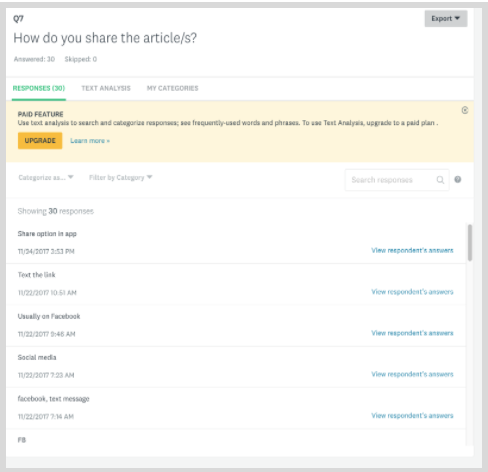
                                    </figure>
                                    <figure>
                                        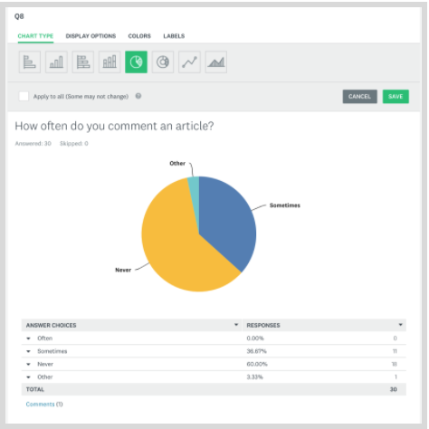
                                    </figure>
                                </div>
                                <div class="imgset1" style="display:flex">
                                    <figure>
                                        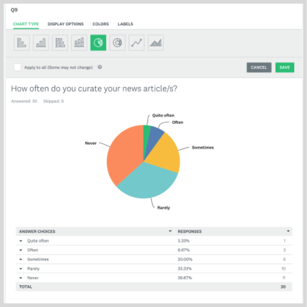
                                    </figure>
                                    <figure>
                                        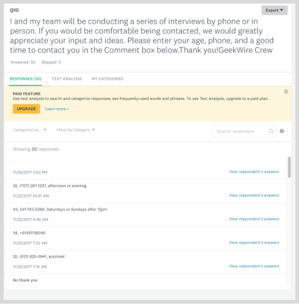
                                    </figure>
                                </div>
                            </div>                             
                    <h3>The Challenge</h3>
                        <p>GeekWire mobile app users want to be able to Search an article easily without getting lost 
                            in the process. They also want to be able to Share, Bookmark, and Comment an article within 
                            the app.</p>
                                
                        <p>Currently:</p>
                        <div>
                            <ul>
                                <li>The app does not have an easy search option</li>  
                                <li>It does have share feature</li> 
                                <li>It lacks bookmarking capability</li>
                                <li>It does not have commenting ability within the app</li>
                            </ul>
                        </div>
                        <div>
                            <div class="imgset1" style="display:flex">
                                <figure>
                                    
                                    <figcaption>Original app Main Screen, no Search option</figcaption>
                                </figure>
                                <figure>
                                    
                                    <figcaption>Share feature</figcaption>
                                </figure>
                                <figure>
                                    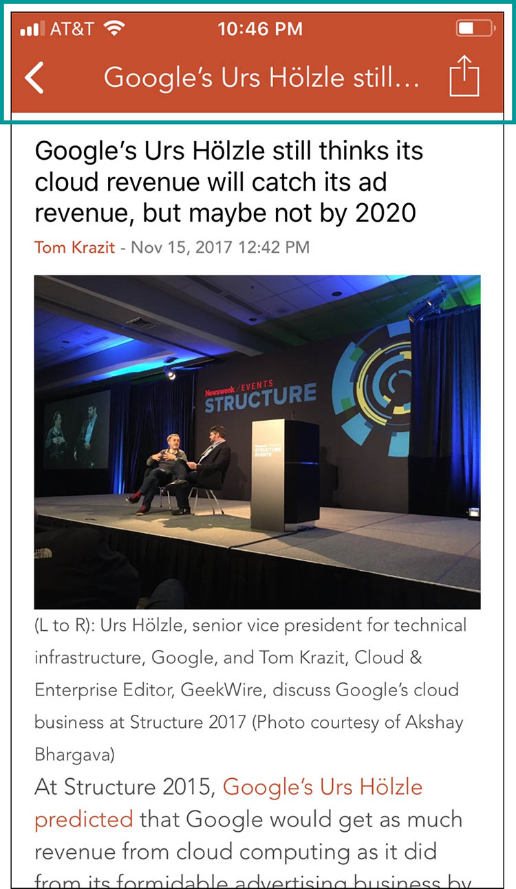
                                    <figcaption>No Bookmarking option</figcaption>
                                </figure>
                                <figure>
                                    
                                    <figure>Can see comments but will not let you comment within the app</figure>
                                </figure>
                            </div>  
                        </div>
                
                    <h3>Competitive Analysis</h3>
                        <p>I did an initial competitive market research and came up with this.</p>
                        <div>
                                <div class="imgset1" style="display:flex">
                                    <figure>
                                        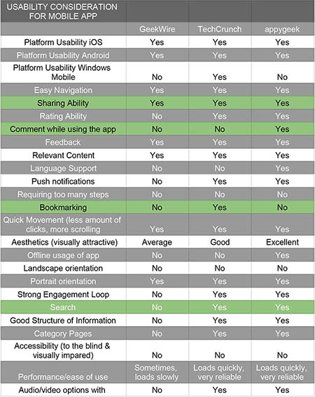
                                    </figure>
                                </div>  
                        </div>
                        <p>I dug deeper and decided to narrow down the list of the most important features among 
                            the 3 competitors. Then I finalized the report with the table below.
                        </p>
                                <div class="imgset1" style="display:flex">
                                <figure>
                                    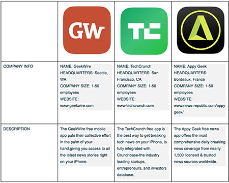
                                    <figcaption>These three apps are one of the biggest when it comes to accessing 
                                        latest technology news stories, and each has their strengths and weaknesses 
                                        in terms of how they operate. Which one provides more relevant content? 
                                        Which one has the biggest reach? Which one is more engaging to the users ? 
                                        It’s imperative to evaluate and consider some important specs of GeekWire, 
                                        TechCrunch, and Appy Geek when it comes to designing the mobile app.</figcaption>
                                </figure>
                                </div>  
                </div>

                <div class="margin-box margin-p">
                   <h2>Approach</h2>
                   <div class="opacity-box"></div>
                   <h3>Persona</h3>
                        <p>We developed a proto persona based on my initial user research. His name is Zach Peterson, 
                            a very busy full stack developer at Amazon. Being a tech entrepreneur, he networks with a lot 
                            of potential investors and with future employers. He is always hungry for information about 
                            latest tech trends. He wants to be successful with the app he’s developing. As a regular tech 
                            news mobile app reader, he gets frustrated when an app lacks depth, has difficult navigation, 
                            no comment ability within the app, lacks search field and no sharing features. He likes to share 
                            news with family and friends. Unable to do some of those things ruins his day.
                        </p>
                                <div class="imgset1" style="display:flex">
                                <figure>
                                    
                                </figure>
                                </div>
                                
                        <p>Todd sketched a storyboard to illustrate Zach’s challenges and his future state after the necessary
                           redesign of the app.
                        </p>
                               <div class="imgset1" style="display:flex">
                               <figure>
                                    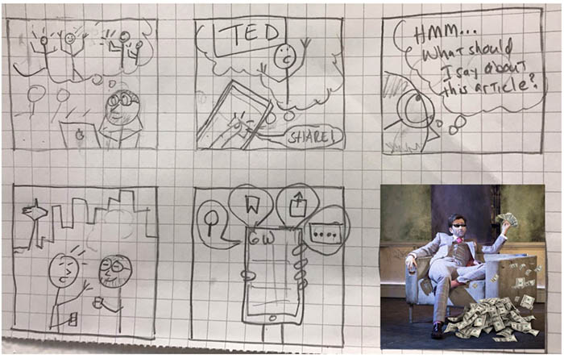
                               </figure>
                               </div>

                    <h3>Feature Prioritization</h3>
                        <p>Based on the results of user research, I helped in selecting the top three pain points to address in 
                            our redesign:</p>
                            <ul>
                                <li>Provide search field </li>
                                <li>Allow sharing option</li>
                                <li>Add bookmark feature</li>
                            </ul>
                        
                    <h3>Problem Statement and Solution</h3>
                        <p>My fellow teammates and I have observed that GeekWire is focusing more on their internet experience 
                            instead of mobile app experience. We noticed that saving articles, sharing articles and commenting 
                            an article/s are major pain points the mobile app has, which is causing less users on their mobile 
                            app. How might we improve so that our product is more successful based on the success other 
                            technology news mobile apps have?
                        </p>
                        <p>We decided that from our proto persona and input to keep a clean look throughout the app and to keep 
                            usability simple and easy. We want to bring more of what the website has to offer into the app to 
                            keep user returns up and bring in more business.
                        </p>          
                </div>

                <div class="margin-box margin-p">
                    <h2>Design</h2>
                    <div class="opacity-box"></div>
                    <h3>Sketching</h3>
                        <p>Todd as the Interaction Designer led the creation of some rough sketches for the 
                        featured screens. I also provided my input as we did another round of whiteboarding. 
                        This time we did it on our work desk.
                        </p>
                    <div class="imgset1" style="display:flex">
                            <figure>
                                    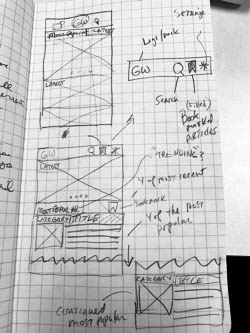
                            </figure>
                    </div>
                    <div class="imgset1" style="display:flex">
                            <figure>
                                    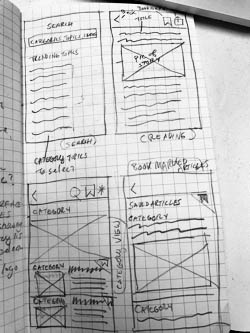
                            </figure>
                    </div>
                    <h3>Design Studio</h3>
                        <p>A major feature my group mates and I were still trying to figure out was the 
                            bookmark screens. To generate ideas quickly as a team, we held a design studio. 
                            We brainstormed how bookmarking should be done, displayed and it became a major 
                            component of our redesign.
                        </p>
                    <div class="imgset1" style="display:flex">
                            <figure>
                                    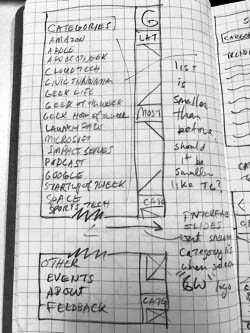
                                    <figcaption>Sketching from first round of design studio. My sketches are 
                                        on the top left. Within 5 minutes, we made as many possible solutions 
                                        as we could think of, and then discussed and provided feedback as to 
                                        why we did a specific screen design.
                                    </figcaption>
                            </figure>
                    </div>
                    <h3>Wireframes</h3>
                        <p>Todd finished up the low fidelity wires. As soon as he was done, he exported the paper prototype into 
                            Pop so I could immediately test the designs with users.  I did the testing in person and 
                            remotely as well. I brought in results from testing and relayed my documentation to Todd and 
                            Mackie. Todd incorporated the changes and started designing high fidelity wires.
                        </p>
                    <div class="imgset1" style="display:flex">
                            <figure>
                                    
                            </figure>
                    </div>    
                    <h3>Scenarios</h3>
                        <p>After sitemap was revised by Mackie, user flow and initial wires finalized by Todd, I started thinking
                            about usability testing. When I was doing usability testing, I used three “almost based on a true story” 
                            scenarios I came up with taking into consideration our proto persona’s needs. I realized an additional 
                            scenario was also possible without disturbing the original task scenarios. I suggested to 
                            incorporate “commenting an article” since we thought about this important feature from before. 
                        </p>
                            <ul>
                                <li>Your nephew John’s 10th birthday is coming up.You're planning to give him a good and trendy 
                                    game gadget.You want to look for ideas on what’s in and not. How would you go about using 
                                    GeekWire app to find for an article about 2017 Holiday Tech GIft Guide?</li>
                                <li>You are reading the article about 2017 Holiday Tech Gift Guide. It’s giving you substantial 
                                    ideas on what to give  to your nephew John for his 10th birthday. You want to make sure that 
                                    the gift on your mind is okay for him to get. How would you go through GeekWire app and forward 
                                    the article to John’s mother so she will be informed on what you’re planning to get and if there’s 
                                    any reservations of getting it?</li>
                                <li>You are on your way for a client meeting in 30 mins. You remember that your nephew John’s 10th 
                                    birthday is coming up.You are planning to get a good and trendy game gadget for him. You found an 
                                    article about 2017 Holiday Tech Gift Guide on GeekWire app but you’re running out of time to read 
                                    it. How would you go about using the app to bookmark the article and read it later?</li>
                            </ul>
                            <div class="img-box">
                                <div class="imgset1" style="display:flex">
                                    <figure>
                                            
                                            <figcaption>Usertest 1</figcaption>
                                    </figure>
                                    <figure>
                                            
                                            <figcaption>Usertest 2</figcaption>
                                    </figure>
                                </div>
                            </div>
                    <h3>Findings Report</h3>
                        <h4>Usability Test of GeekWire App Prototype</h4>
                            <p>Overall Task Success: 99%</p>
                            <p>GeekWire Crew</p>
                            <p>December 1, 2017</p>
                                <ul>
                                    <li>Todd A.</li>
                                    <li>Mary Ann D.</li>
                                    <li>Mackie H.</li>
                                </ul> 
                        <h4>Purpose:</h4>   
                                <ul>
                                    <li>Get data from users about the app prototype</li>
                                    <li>Measure user success with tasks</li>
                                    <li>Discover user difficulties &amp; roadblocks in using the app prototype</li>
                                    <li>Suggest recommendations for improvement</li>           
                                </ul> 
                        <h4>What I Did:</h4>
                                <ul>
                                    <li>Paper prototype tested on November 28, 2017</li>
                                    <li>Digital Prototype tested on November 29, 2017</li>
                                    <li>13 users</li> 
                                    <li>Usability problems collected &amp; prioritized</li>           
                                </ul>
                        <h4>A. Paper Prototype v.0</h4> 
                                <ul>
                                    <li>Rapid informal testing</li>
                                    <li>2 Unmoderated Participants</li>
                                    <li>5 Moderated Participants</li>
                                    <li>Students</li>
                                    <li>Tech workers</li>
                                    <li>Invited participants in person and thru email</li>       
                                </ul>
                        <h4>Analyzing Results</h4>
                            <h5>Quantitative Data</h5>
                                <div class="img-box">
                                    <div class="imgset1" style="display:flex">
                                        <figure>
                                            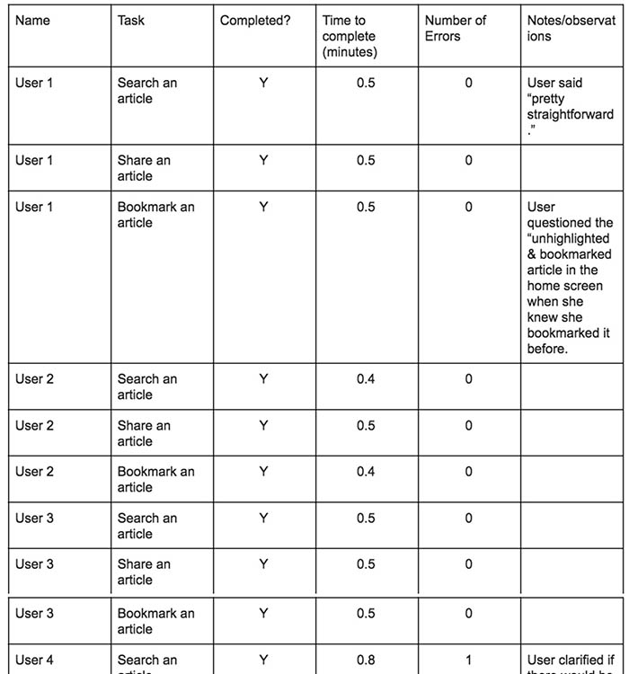
                                        </figure>
                                    </div>
                                </div> 
                            <p>Odd # questions score + Even # questions score = (18+20)= 38</p>
                            <p>38 x 2.5= 95</p>
                            <p>Post-Test Survey (SUS Score)= 95 Acceptable</p>
                            <p>How likely are you to recommend this project to others? 8</p>
                            <h5>Additional Comments:</h5>
                                <ul>
                                    <li>User 2 questioned about the usage of “Story Title” as a short title for the articles.</li> 
                                    <li>Was also concerned of the impact of long title, maximum characters for story description 
                                        to the overall design of the screen.</li>
                                    <li>User 5 commented “Very easy to figure out and use, sticking to the basic apple icons helps”.</li>
                                    <li>User 6 said that the prototype was simpler and easier to use than the current app.</li>        
                                </ul>
                            <h5>Findings:</h5>
                                <p>Problem 1. User 1 questioned the unhighlighted & bookmarked article in the home screen when she 
                                   knew that she bookmarked it before.</p>
                                <div class="img-box">
                                    <div class="imgset1" style="display:flex">
                                        <figure>
                                            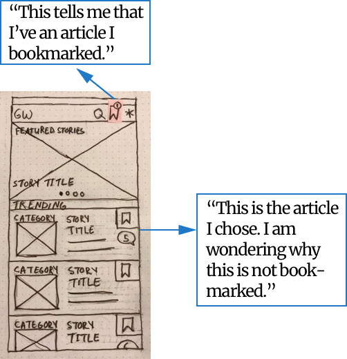
                                        </figure>
                                    </div>
                                </div>
                            <h5>Recommendations:</h5>
                                <p>Update/highlight the bookmark icon.</p>
                                <div class="img-box">
                                    <div class="imgset1" style="display:flex">
                                        <figure>
                                            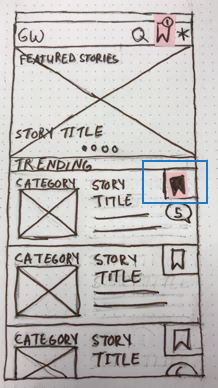
                                        </figure>
                                    </div>
                                </div>
                                <p>Problem 2.User clarified if there would be a popped up screen when search icon is clicked. 
                                   Preferred that way instead of displaying a new screen.</p>
                            <h5>Recommendations:</h5>
                                <p>Per HIG, a search bar when displayed in navigation bar, can be pinned to the navigation 
                                   bar so it’s always accessible, or it can be collapsed until the user swipes down to reveal it.</p>
                                    <div class="img-box">
                                    <div class="imgset1" style="display:flex">
                                        <figure>
                                            
                                        </figure>
                                    </div>
                                    </div>
                        <h4>Prototype v.1</h4>
                            <ul>
                                <li>Rapid informal testing</li>
                                <li>6 Moderated Participants</li>
                                <li>Students</li>
                                <li>Tech workers</li>
                                <li>Invited participants in person</li>            
                            </ul>
                        <h4>Analyzing Results</h4>
                            <h5>Quantitative Data</h5>
                                <div class="img-box">
                                    <div class="imgset1" style="display:flex">
                                        <figure>
                                            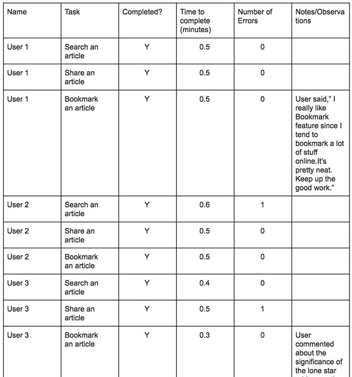
                                        </figure>
                                    </div>
                                </div>
                            <h5>Additional Comments:</h5>
                                <ul>
                                    <li>User 2 mentioned how he liked the icons being big enough to not overwhelm the article 
                                        related to it and the overall screen.</li>
                                    <li>User 3 (paraphrased), ”You guys did a good job!”</li>
                                    <li>User 4 , ”Very straightforward!”</li>
                                    <li>User 5 suggested to use a hamburger menu or a logo on the top navigation instead of a 
                                        arrow/Back icon while on the Bookmarked article or other screens (other than the home 
                                        screen) to take you to the home screen.</li>
                                    <li>User 6 commented how the app was very easy to use and totally addressed his concerns.</li>
                                </ul>      
                    <h3>Final Wireframes &amp; High Fidelity Mock ups</h3>
                        <p>Todd completed the wireframes as I went ahead with testing the designs with users. As I brought in results from
                           testing, Todd incorporated changes.
                        </p>
                        <p>I went ahead and continued with another round of usability testing this time with the “commenting an 
                            article” included. I received a lot of great feedbacks about the Search, Share, and Bookmark features. A 
                            few minor issues of the screens had to be iterated. One was related to the ability to comment an article. 
                            Originally, we made that feature wherein when a user posts a comment on an article, in order for that post 
                            to be seen in social media as well, it would ask the user to login first in whatever social network his/her 
                            account is connected to. We realized that some users might prefer posting their comments anonymously within 
                            the app. So, we made the necessary changes.
                        </p>
                        <div class="img-box">
                                     <figure>
                                         
                                        <figcaption>Figure 1. Home screen wire and mockup.</figcaption>    
                                     </figure>
                        </div> 
                    <h3>Prototype</h3>  
                    <iframe style="width:100%;min-height:50vh" src="https://www.youtube.com/embed/pvzESzjjxME" frameborder="0" gesture="media" 
                    allow="encrypted-media" allowfullscreen></iframe>
                </div>

                <div class="margin-box margin-p">
                    <h2>Results &amp; Reflections</h2>         
                    <ul>
                        <li>For future steps, I would like to spend time finessing the visual design. It was Mackie’s role but I would 
                            like to try it for the experience. Due to time constraints, we were not able to get in a final round of user 
                            testing with the mockups.</li>
                        <li>I also got good feedback from teammates on my research skills, which reinforced my understanding of my 
                            curiosity, systematic and commitment skills.</li>
                        <li>As a team, we also thought about elevating the overall branding of GeekWire to beat competitors through 
                            adding podcast and videos in app, language support and push notification to address the non-English 
                            speaking followers of the app. Most importantly, integrating GeekSummit App since 40% of GeekWire income 
                            is generated through organizing events.</li>
                        <li>Lastly, the key finding was that our users (and with consideration to the proto persona) need to have a great 
                            mobile app experience when it comes to reading and accessing latest technology news stories. We created a 
                            redesign of the mobile application in an attempt to solve the current pain points of the users by adding search, 
                            bookmark, commenting within the app features,  and retaining the share capability, but more testing is needed to 
                            find out if this is truly an effective solution for our users.</li>
                    </ul> 
                </div> 

                <div class="margin-box">
                    <blockquote>
                                Most people make the mistake of thinking design is what it looks like. People think
                                it’s this veneer – that the designers are handed this box and told “make
                                it look good”. That’s not what we think design is. It’s not just what it
                                looks like and feels like. Design is how it works.
                                <span>Steve Jobs, US computer engineer & industrialist.</span>
                    </blockquote>
                </div>
                
            </div>
            <div class="col-lg-3 col-md-4 hidden-sm hidden-xs sidebar-wrapper">
                <div class="sidebar-form">
                    <div class="margin-box">
                        <h4>Need UX design help?</h4>
                        <div class="opacity-box">
                            <p>Are you working on something similar? I would love to help make it happen!
                                Just send me your e-mail and we will discuss your project together.</p>
                        </div>
                    </div>
                    <div class="form-wrapper">
                        <form id="sidebar-form" novalidate>
                            <div class="form-group">
                                <label for="sidebar-name">Name</label>
                                <input type="text"
                                        class="site-input name-input"
                                        id="sidebar-name"
                                        placeholder="Your name"
                                        required
                                        data-validation-required-message="Invalid input">
                                <p class="help-block"></p>
                                <p class="help-block-success">done</p>
                            </div>
                            <div class="form-group">
                                <label for="sidebar-email">E-mail</label>
                                <input type="email"
                                        class="site-input email-input"
                                        id="sidebar-email"
                                        placeholder="Contact e-mail"
                                        required
                                        data-validation-email-message="Invalid input"
                                        data-validation-required-message="Invalid input">
                                <p class="help-block"></p>
                                <p class="help-block-success">done</p>
                            </div>
                            <div>
                                <input class="site-btn btn-theme-blue" type="submit" value="Send message">
                            </div>
                        </form>
                    </div>
                </div>
            </div>
        </div>
    </div>
</div>
